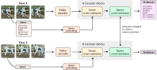

Abstract
We introduce Tracktail, a novel architecture designed to efficiently track query points in 3D from multiple calibrated views without any depth input. Our architecture separates the task as a per-camera video encoding of features and a per-query decoder. Notably, camera cross-attention is only performed across queries in the decoder, allowing for efficient inference (7 FPS and less than 4 GB memory for 10 views and 100 query points). We further introduce a per-camera scene scale computed from camera geometry, which allows us to normalize inputs and predictions appropriately across a vast variety of dataset scales. We train on a synthetic Multi-View Kubric dataset as well as a novel Multi-View Point Odyssey benchmark dataset, which consists of synthetic renders of humans and animals across 499 frames. Tracktail achieves state-of-the-art results on the Panoptic Studio, DexYCB, and Multi-View Kubric benchmarks, outperforming methods that rely on estimated depth. Tracktail also demonstrates a strong ability to maintain accurate tracking over longer ranges compared to existing methods. Our code, data, and weights are publicly available.
Key Contributions
- We introduce Tracktail, a depth-free multi-view 3D point tracker with an encoder-decoder architecture.
- We robustly handle the scene normalization problem by introducing a scene scale parameter computed from camera parameters and query points.
- We establish a new benchmark dataset for 3D tracking, Multi-View Point Odyssey, to assess long-term tracking.
- We demonstrate that our model achieves state-of-the-art results on existing benchmarks in both positional and occlusion accuracy.
- We show that inference with our model is both faster and more memory efficient than existing 3D point tracking methods and scales better with the number of views.
Method
Given frames from multi-view videos, the corresponding camera intrinsics and extrinsics, and 3D query points with their query times, Tracktail predicts the 2D and 3D trajectories and visibilities of the query points for all input frames. First, the frames are passed through a video encoder (V-JEPA 2.1) independently per view to obtain a scene representation. The 3D queries are passed through a query encoder to obtain a camera-specific query embedding for each view and target frame. These embeddings are processed by a series of decoder blocks with camera self-attention across views, temporal self-attention across frames, and cross-attention from each view’s queries to that view’s scene tokens. The decoder predicts per-camera 3D positions, 2D positions, depth, visibility, and fusion weights, which are combined across cameras into the final 3D trajectories.

Scene Scale
Multi-view tracking has to work across cameras with different effective scales and datasets with different units. We robustly handle this with a per-camera scene scale \(s_c\), computed analytically from the camera parameters and the query points (it is not learned). Intuitively, \(s_c\) is the 3D displacement, in scene units, that moves a point by about one pixel in camera \(c\).
Here \(\mathbf{J}_c(\mathbf{q}_n)\in\mathbb{R}^{2\times3}\) is the Jacobian of camera \(c\)’s projection (extrinsics followed by pinhole) at query point \(\mathbf{q}_n\), so \(\sigma_{\max}\) is the largest pixel displacement per unit of 3D motion. We use \(s_c\) to express everything the network sees and predicts in pixel-like units: query depth is divided by \(s_c\), predicted 3D motion is expressed in units of \(s_c\), predicted depth in units of \(s_c f_c\) (with \(f_c\) the focal length), and the 3D losses are normalized the same way. This lets a single model train and run across camera rigs and datasets with arbitrary units, with no manual rescaling.
Benchmark Results
Predictions on held-out test trials from Multi-View Kubric, DexYCB and Panoptic Studio. Tracktail achieves state-of-the-art results on these benchmarks, and performs especially well on the real-world datasets DexYCB and Panoptic Studio.
Multi-View Point Odyssey
323 training videos, 18 test videos, 9 static cameras, ~123,000 frames, ~45,000 trajectories per video
Multi-View Point Odyssey is composed of a human dataset and an animal dataset. We build both by extending the Point Odyssey generation pipeline so that every scene is rendered from 9 static cameras placed around the subject, with ground-truth 3D trajectories and per-camera visibility for every surface point.
BibTeX
@article{tracktail2026,
title = {Tracktail: Multi-View 3D Point Tracking without Depth Input},
author = {Katie L. Rupp and Jonathan Wong and Sharmishtaa Seshamani and Ana Mafalda Vicente and Lili Karashchuk},
journal = {arXiv preprint},
year = {2026}
}